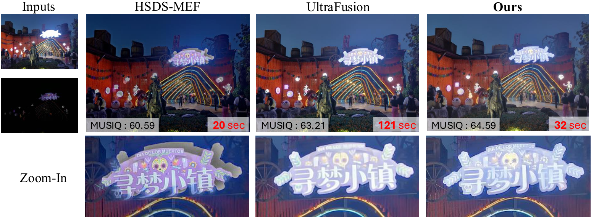
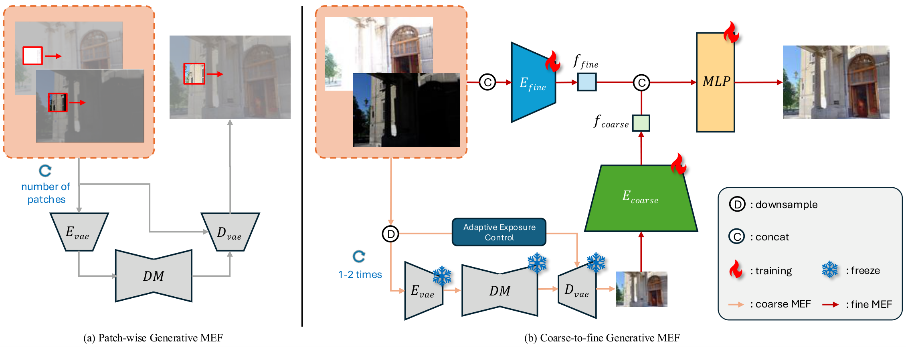
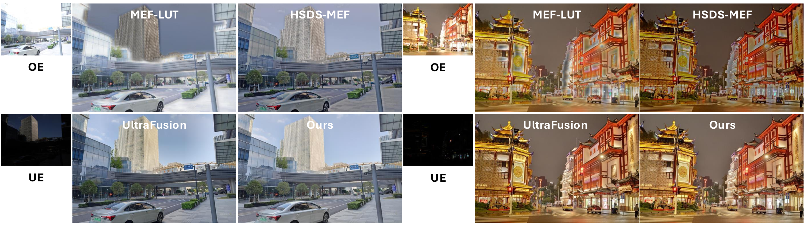
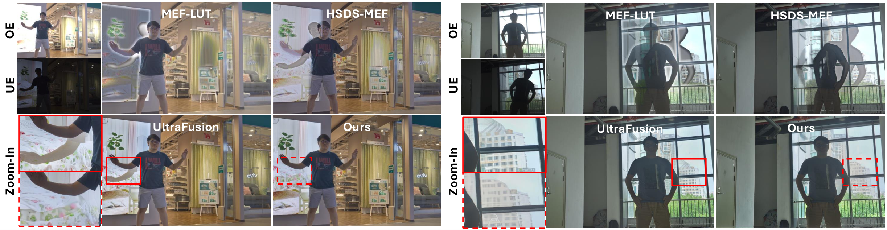

global generative synthesis followed by high-resolution implicit refinement.
Coarse-to-fine Framework for Generative MEF
via Implicit Neural Representation
ECCV 2026
1Yonsei University 2AI Lab, CTO Division, LG Electronics 3AI Center - Toronto, Samsung Electronics

Abstract
Multi-exposure fusion (MEF) expands the luminance range beyond what a single exposure can capture. Combining images taken at different exposure levels requires handling geometric differences while naturally merging their complementary brightness information. It often demands generative completion where details are missing. Diffusion-based generative methods address these challenges, however, they are computationally expensive and struggle to preserve fine structures in saturated regions. We propose LIIFusion, a coarse-to-fine framework that balances fusion quality and efficiency in generative MEF. The coarse stage performs low-resolution generative fusion, enhanced by adaptive exposure correction that recovers structure lost in saturated over-exposed areas. The fine stage adapts local implicit image functions for fusion, enabling resolution-agnostic, pixel-wise refinement capable of restoring fine detail.
First usage of implicit function for image fusion.
3.7x speed-up over exisiting Generative MEF method while achieving SOTA performance.
Background
| Conventional MEF | Patch-wise Generative MEF | Coarse-to-fine Generative MEF | |
|---|---|---|---|
| Models | CNN, Transformer | Diffusion | Diffusion, LIIF |
| Dynamic Range | Limited (3-4 stops) | Extended (9 stops) | Extended (9 stops) |
| Motion Handling | Static / Mild | Dynamic | Dynamic |
| Fusion Behavior | Regressive | Probabilistic | Both |
| Speed | Fast (~minutes) | Slow (~hours) | Fast (~minutes) |
Method

Quantitative Results
| Model | RealHDRV (50 scenes) | UltraFusion Benchmark (100 scenes) | ||||||||
|---|---|---|---|---|---|---|---|---|---|---|
| MUSIQ ↑ | DeQA ↑ | PAQ2PIQ ↑ | HyperIQA ↑ | Time ↓ | MUSIQ ↑ | DeQA ↑ | PAQ2PIQ ↑ | HyperIQA ↑ | Time ↓ | |
| Defusion | 56.38 | 3.2867 | 68.31 | 0.4838 | 2 min | 60.11 | 3.3529 | 71.83 | 0.5440 | 6 min |
| MEF-LUT | 62.42 | 3.2864 | 70.04 | 0.5020 | 4 sec | 64.06 | 3.2859 | 71.80 | 0.5103 | 8 sec |
| HSDS-MEF | 61.82 | 3.6045 | 71.14 | 0.5055 | 18 min | 65.23 | 3.6662 | 73.77 | 0.5786 | 46 min |
| UltraFusion | 67.54 | 3.8998 | 73.39 | 0.5834 | 101 min | 68.40 | 4.0123 | 75.18 | 0.6214 | 203 min |
| Ours | 69.52 | 3.8908 | 74.06 | 0.6175 | 27 min | 70.19 | 3.9807 | 75.59 | 0.6467 | 59 min |
Qualitative Results

